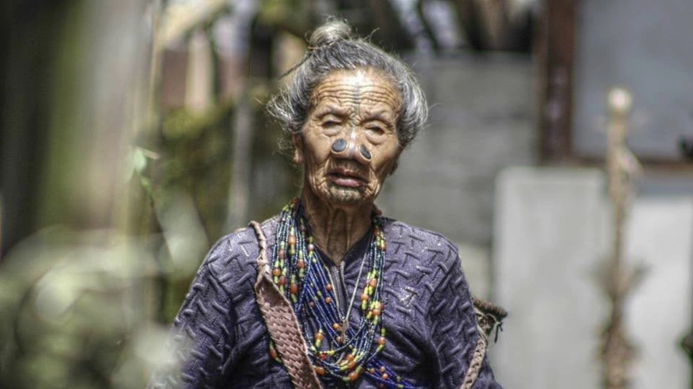
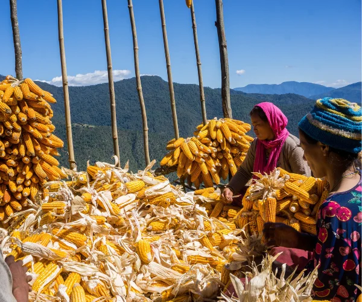

Overview
A close look at Arunachal Pradesh’s spiritual and cultural worlds
Arunachal Unravelled is an Arunachal Pradesh culture tour that follows the region’s cultural layers, from Buddhist valleys and monasteries to animist communities, forest landscapes and frontier settlements. You can also browse our wider Arunachal Pradesh tours for cycling, walking and family routes.
The journey is designed to move slowly, with time for village visits, food, markets, sacred spaces, conversations and the shifting relationship between landscape and belief. Travellers interested in a broader culture route across several states may also like Tribes of the East.
The route can be shaped between 8 and 16 days depending on the region, access, festivals and how deeply you want to travel.
Tour Details
Route character

Journey Flow
The tour in sections
This is an indicative flow. The final route is shaped around your dates, local access, festivals, village stays and group pace.
Western Arunachal
Begin with the Buddhist landscapes of western Arunachal, where monasteries, mountain settlements and ritual life shape the opening section of the journey.
Central Arunachal
Move through central Arunachal’s river valleys, markets and village landscapes, where older animist traditions and everyday cultural life remain closely tied to place.
Eastern Arunachal
Finish in the eastern frontier, travelling through forested valleys and communities shaped by Buddhism, Animism, migration histories and the great tributaries of the Brahmaputra.
Detailed itinerary
Ask for the full route plan and cost
The itineraries are unique, so the detailed route and cost are shared directly after understanding your dates, pace and group size.
Photo Gallery
Arunachal, belief and landscape
Enquire
Plan Arunachal Unravelled
Share a few details and we will get back to you with the best route, duration and cost options.